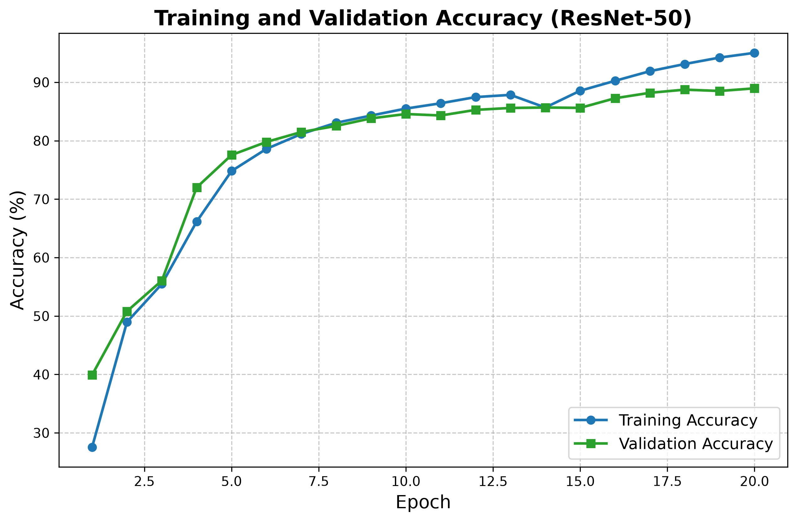
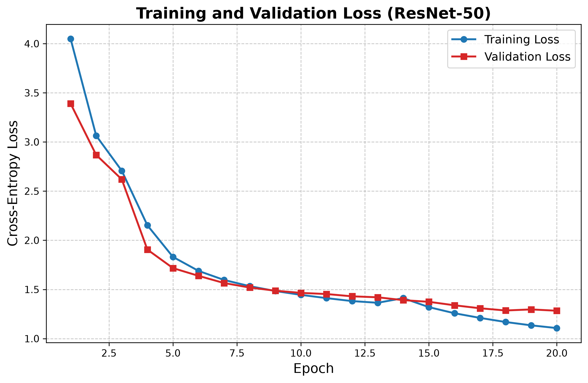
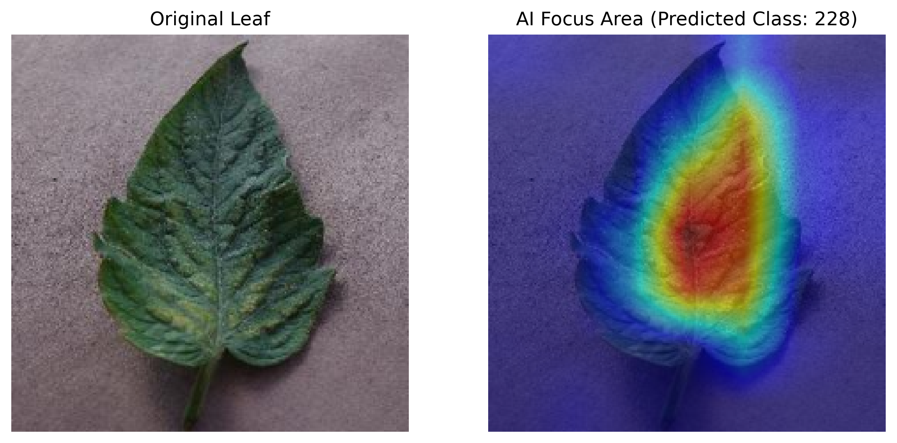

Analyze training performance and model interpretation
Select which AI architecture the system should use for real-time plant disease diagnosis.
Real-time metrics extracted from the latest PyTorch checkpoint during fine-tuning.


Visual proof of interpretability: The heatmap shows the exact regions the ResNet50 model focuses on to predict the disease pathology. This proves the AI has learned the biological symptoms, not just background noise.
